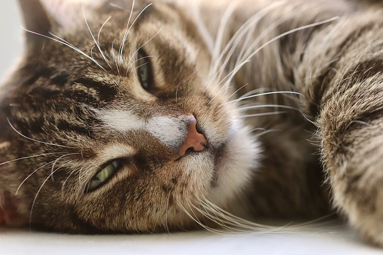

"As a general rule of thumb, cats are classified as mature (7 to 10 years), senior (11 to 14 years), and geriatric (15 years or more). Cat's aging should be viewed as being on a continuum because the aging process differs for individual cats based on factors, such as their size and environment." (ASPCA Pet Health Insurance)

What changes do cats go through as they age?
- Taking longer to cope with stress or change, or getting startled more easily.
- Mobility issues, including those caused by arthritis in joints and back pain. In overweight cats, these issues can start earlier.
- Underlying medical conditions which can develop between the yearly checkups recommended for younger cats.
- Needing smaller, more frequent meals.
- Becoming more vocal.
- Missing the litter box.
- Seeking more attention and/or lap time.
What changes can help your senior feel more comfortable?
- Assess your cat’s condition with the help of a full checkup with a veterinarian. Continue with checkups every 6 months and full bloodwork every year.
- Mitigate stress by keeping routines (mealtimes, activities, bedtime, etc.) consistent and reducing noise levels at home.
- Make accommodations for your cat based on any conditions they may have, including providing pet stairs to avoid jumping, using litter boxes with lower sides or puppy pads, adding litter boxes, etc.
- Offer smaller, more frequent meals and consistently full water bowls
- Monitor your cat’s sight and hearing make accommodations accordingly, i.e. avoiding a fear response by not approaching a blind or hearing-impaired cat from behind.
- Enjoy as much TLC as possible! Older cats may seek lap time more often. It’s okay—and very good for them—to take extra time to slow down and rest with them more. Rest is crucial for us all. When we rest with our cats, it is mutually beneficial and also excellent bonding time.
This is when your cat needs you the most!
Extra cleaning and monitoring may feel like chores to you, but they mean the world to your cat!
It's crucial to keep up with regular checkups and seek veterinary help if anything seems amiss. “Any change in behavior or health - acute or gradual - warrants a visit to your veterinarian without delay.”(Cornell Feline Health Center)